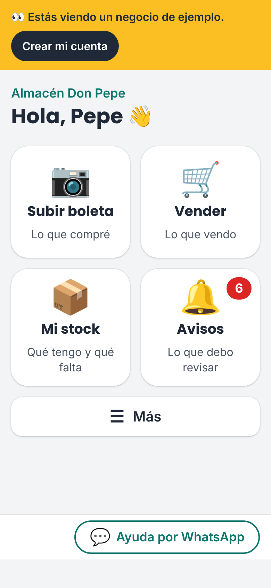
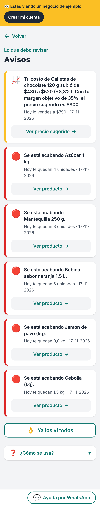
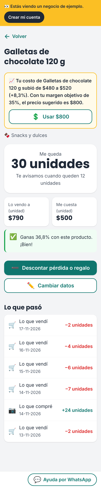
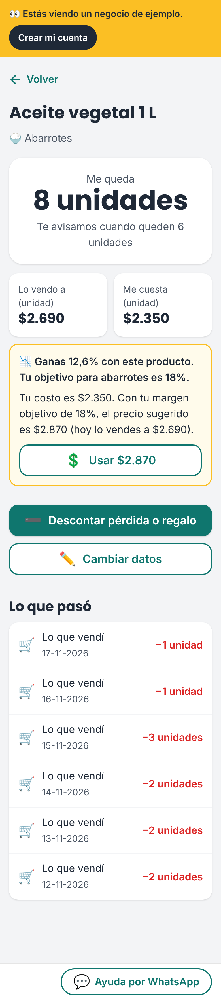
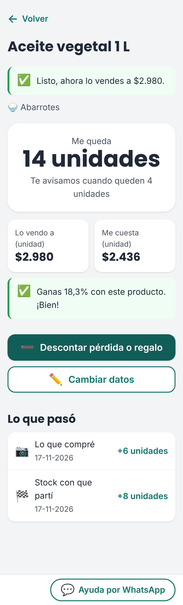
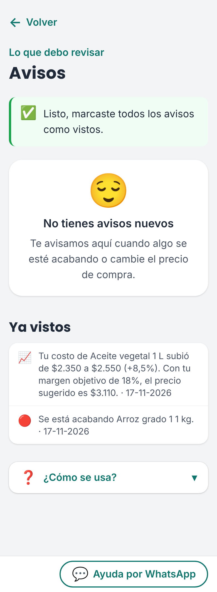
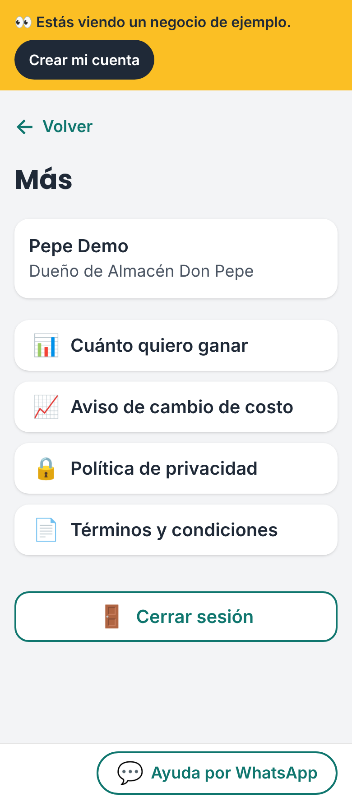
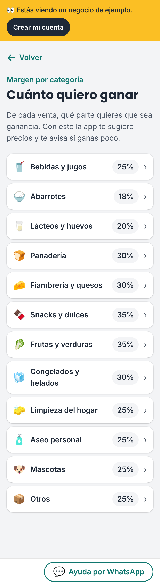
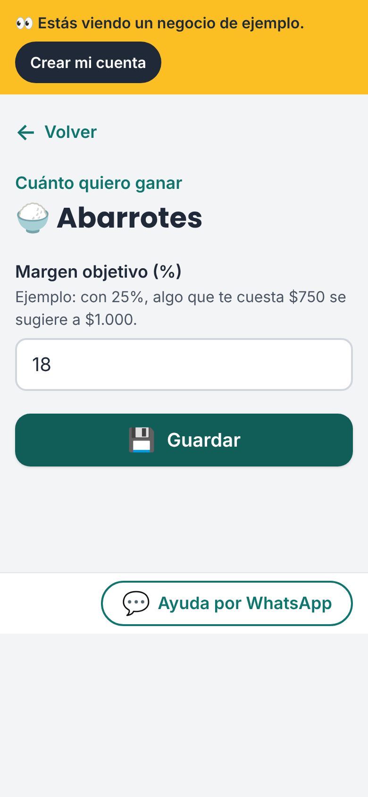
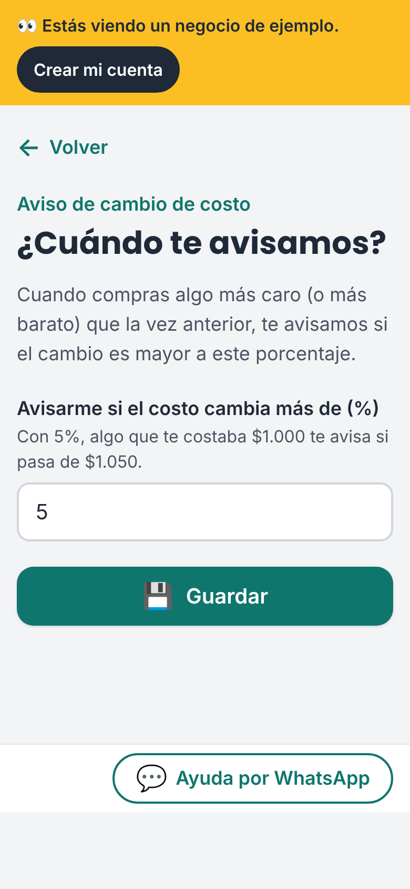

▶ Video del recorrido
El recorrido principal de la fase, como lo haría un almacenero.
Los avisos se crean solos: cuando algo se está acabando y cuando una compra cambia el costo más del porcentaje que elegiste. Cada aviso de costo trae el precio sugerido explicado en una frase, con un botón para usarlo. El margen de cada categoría y el porcentaje del aviso se cambian en “Más”. (El envío por correo y al celular se suma cuando estén las cuentas de correo y Vercel.)
El recorrido principal de la fase, como lo haría un almacenero.
El botón “Avisos” muestra en rojo cuántos avisos nuevos hay.

Tarjetas simples: en rojo lo que se está acabando (con lo que queda hoy) y en amarillo el alza de costo de las galletas con el precio sugerido. Cada una tiene un botón para ir al producto.

Al tocar el aviso de costo se abre el producto con el aviso arriba: “Tu costo subió de $480 a $520 (+8,3%). Con tu margen objetivo de 35%, el precio sugerido es $800”, y un botón “Usar $800”.

La ficha explica el precio sugerido en una frase y ofrece usarlo con un toque.

Al tocar “Usar”, el precio de venta cambia al sugerido y se confirma con un mensaje.

Con “Ya los vi todos” quedan como vistos (abajo). Si no hay nada nuevo, la pantalla lo dice tranquila.

El dueño tiene dos opciones nuevas: “Cuánto quiero ganar” (margen por categoría) y “Aviso de cambio de costo”.

El margen objetivo de cada categoría. Con esto se calculan los precios sugeridos.

Un solo dato por pantalla, con un ejemplo de qué significa.

Por defecto 5%: si algo que costaba $1.000 pasa de $1.050, te avisamos.
